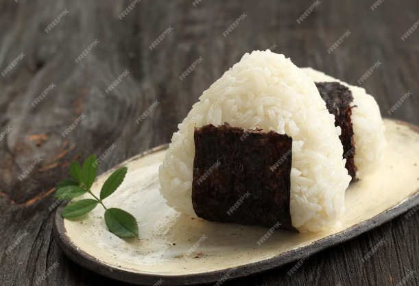

Onigiri (Japanese Rice Balls)

Description
This quick onigiri dish is also enjoyable to create! These rice balls are a mainstay of Japanese bento
boxes. You can make these rice balls with nearly anything; try substituting grilled salmon, pickled plums,
beef, hog, poultry, or tuna for mayonnaise.
Ingredients
Katsu Sauce
- 4 cups uncooked short-grain white rice
- 5 ½ cups water, divided
- ¼ teaspoon salt
- ¼ cup bonito shavings (dry fish flakes)
- 2 sheets nori (dry seaweed), cut into 1/2-inch strips
- 2 tablespoons sesame seeds
Steps
- Wash rice in a mesh strainer until water runs clear. Combine washed
rice and 4 1/2 cups water in a saucepan. Bring to a boil over high heat,
stirring occasionally. Reduce heat to low; cover, and simmer rice until
water is absorbed, 15 to 20 minutes. Let rice rest for 15 minutes to
continue to steam and become tender. Allow cooked rice to cool.
-
Combine remaining 1 cup water with salt in a small bowl; use to dampen hands
before handling rice. Divide cooked rice into 8 equal portions. Use one portion
of rice for each onigiri.
-
Divide one portion of rice in two. Create a dimple in rice and fill with a heaping
teaspoon of bonito flakes. Cover with remaining portion of rice and press lightly
to enclose filling inside rice ball. Gently press rice to shape into a triangle;
wrap with a strip of nori and sprinkle with sesame seeds. Repeat with remaining
portions of rice.
Home